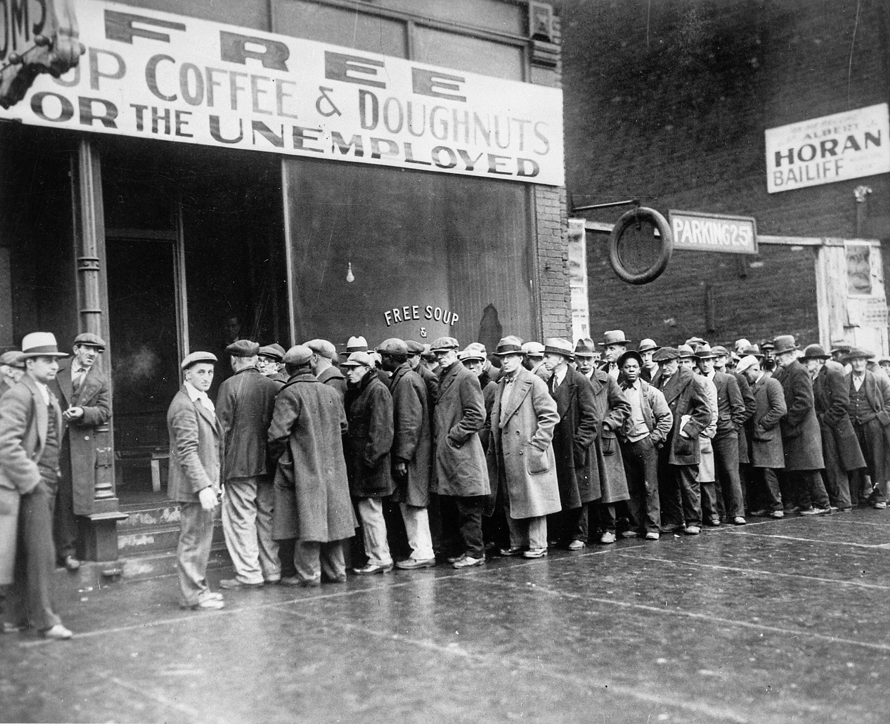
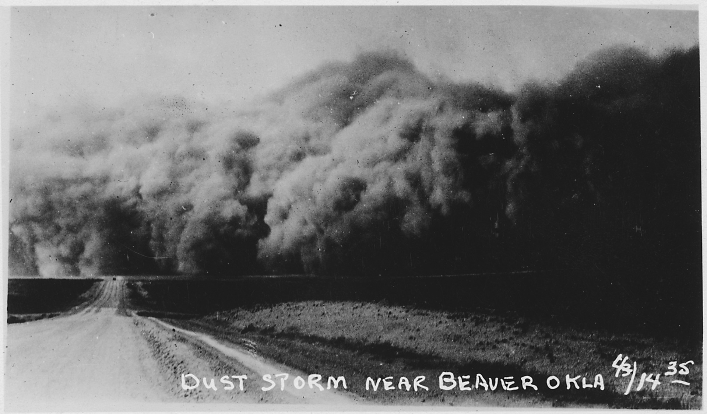
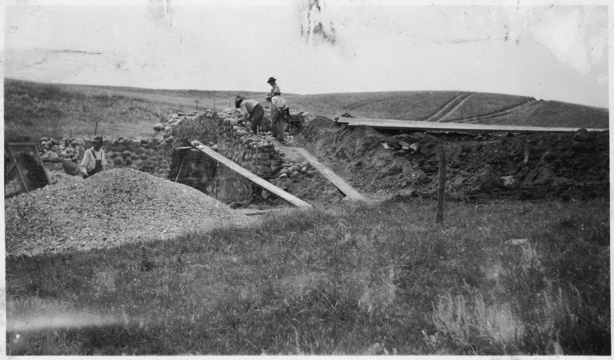
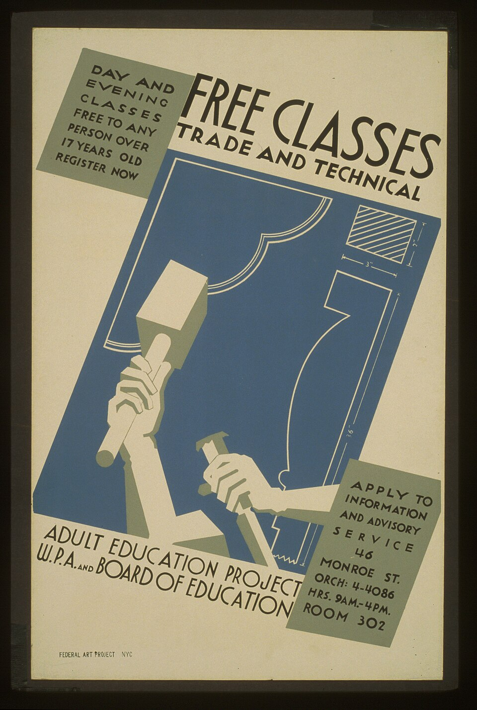
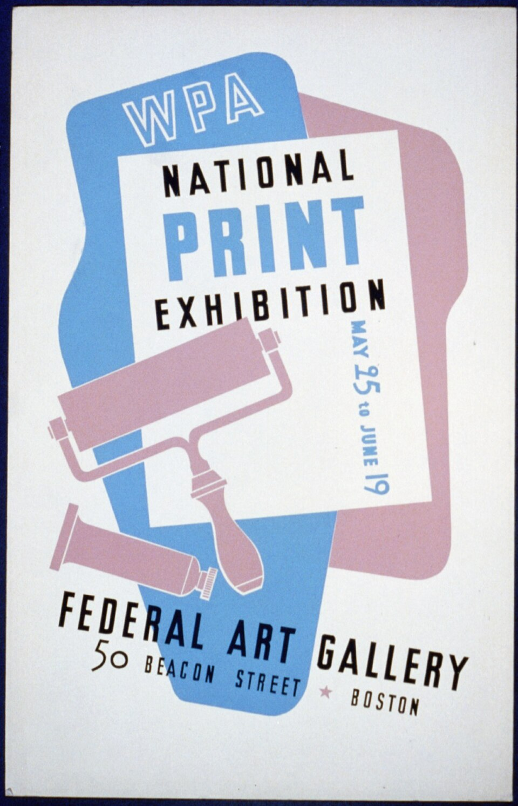

The Play Call — Event 1 of 4
The New Deal
When 25 percent of Americans had no work, no money, and no clear way forward — the government made its biggest bet in history.
United States · 1933–1938 · Expansionary Fiscal Policy

When 25 percent of Americans had no work, no money, and no clear way forward — the government made its biggest bet in history.
By 1933, one in four Americans was unemployed. Banks had failed. Farms had been abandoned. Families were living in shacks built from scrap metal and cardboard.
It did not happen overnight. The stock market crashed in October 1929. Banks followed. When banks failed, the savings of ordinary families disappeared overnight — not because they had done anything wrong, but because the system they trusted collapsed around them. By the time Franklin Roosevelt became president in March 1933, the national economy had been shrinking for four straight years.
Roosevelt inherited an emergency. And he responded with a plan unlike anything the federal government had ever attempted.
"The only thing we have to fear is fear itself."
— Franklin D. Roosevelt, First Inaugural Address, March 4, 1933

Roosevelt's New Deal was not one program. It was dozens of programs launched in rapid succession, designed to do three things at once — provide immediate relief to families who had nothing, create jobs on a national scale, and reform the financial system so this could never happen again.
The Civilian Conservation Corps — the CCC — hired young men from unemployed families to plant trees, build trails, and restore national parks. The Works Progress Administration — the WPA — hired writers, painters, architects, and construction workers to build public schools, post offices, murals, and roads. These were not charity programs. They were paychecks. And those paychecks moved through communities that had stopped spending entirely.



Not everyone celebrated. Business owners argued the government had no right to interfere with the market. Conservative politicians called Roosevelt a socialist. The Supreme Court struck down several New Deal programs as unconstitutional. Roosevelt responded by threatening to add new justices to the Court — a move that alarmed even his supporters.
The argument over whether the New Deal went too far or not far enough continues today.
Millions of Americans went back to work. Roads were built. Schools were constructed. Parks were restored. Unemployment fell from 25 percent in 1933 to 14 percent by 1937. Families had paychecks again. Communities had buildings that are still standing today.
The Social Security Act — passed in 1935 — created a permanent safety net for elderly and disabled Americans. That program still exists.
The New Deal had a racial blind spot built directly into it. Many programs specifically excluded Black Americans. The CCC was segregated. The Agricultural Adjustment Act paid white farm owners to reduce production — and those owners used the payments to evict Black sharecroppers from the land they worked.
The deficit spending that funded the New Deal added to a national debt that future generations would carry. And unemployment did not return to pre-Depression levels until World War II began.